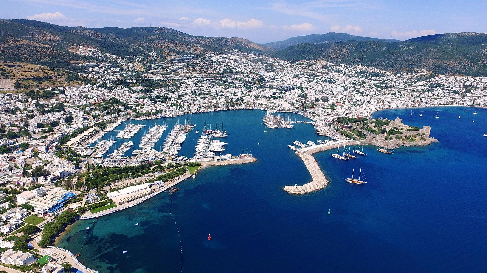
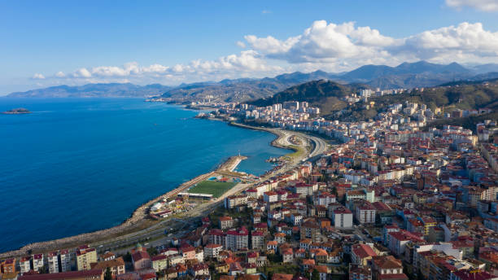

Istanbul is meer dan twee-en-een-half millennia oud.
Istanbul is de hoofdstad geweest van vier rijken: het Romeinse rijk, het Byzantijnse rijk, het Latijnse rijk
het Byzantijnse rijk en het Ottomaanse rijk.
De geschiedenis van Istanbul is zeer rijk en overblijfselen van elk van deze rijken zijn nog steeds te zien.
Ondanks de leeftijd van de stad zijn gelukkig veel overblijfselen van het weelderige verleden van Istanbul intact gebleven.
Het culturele erfgoed van de metropool is indrukwekkend.

dreamofholiday
Trabzon wordt vaak de stad van de sultans genoemd omdat het de geboorteplaats was van de beroemde Ottomaanse sultan, Suleiman de Grote.
Omdat Trabzon dicht bij de kust ligt, heeft het natuurlijk een bloeiende visindustrie, en dit komt tot uiting in regionale gerechten,
waarvan vele hamsi (ansjovis) bevatten. Een cultureel aspect dat ik aanbid aan Trabzon is de Horon-dans.
Hoewel het uniek is voor het Zwarte Zeegebied en niet alleen voor Trabzon, is het een prachtig vertoon van snel en behendig geüniformeerd dansen
Trabzon heeft een vochtig, subtropisch klimaat dat totaal verschilt van het winter- en zomerklimaat van de Egeïsche en Mediterrane kusten.

ontdekturkije
Het schiereiland Bodrum bestaat uit de belangrijkste stad en vele omliggende kustplaatsen zoals Yalikavak en Turgutries.
Sommige worden op de markt gebracht, terwijl andere, zoals Turkbuku, worden bezocht door de rijke en beroemde beroemdheden van Turkije.
Het levendige Gumbet is vooral een favoriete plek van de Britten vanwege de watersporten en het nachtleven,
terwijl het traditionele Gumusluk de Europese bezoekers trekt.
In de zomer zijn de stranden een bijenkorf van activiteit, maar 's nachts is waar het allemaal om draait.
Wat je ook zoekt, je vindt het in Bodrum. Het heeft prachtige stranden en een breed scala aan dingen om te doen, waaronder jeepsafari's,
historische bezienswaardigheden, een waterpark, watersporten, schildervakanties, actieve sporten en de lijst gaat maar door.
more info

istockphoto